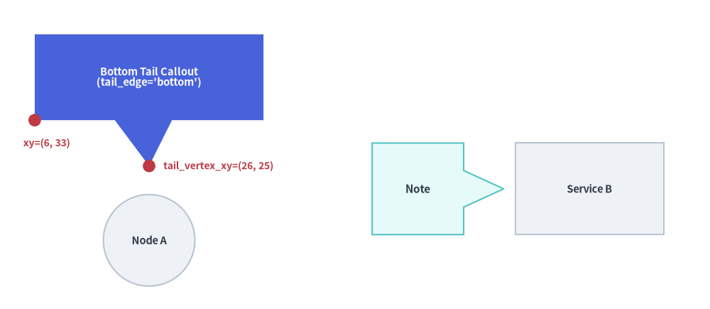
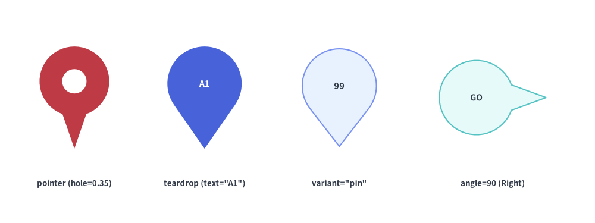
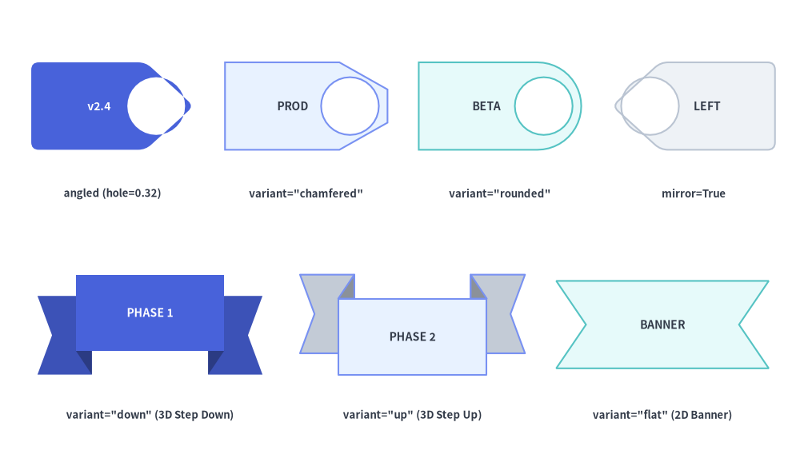
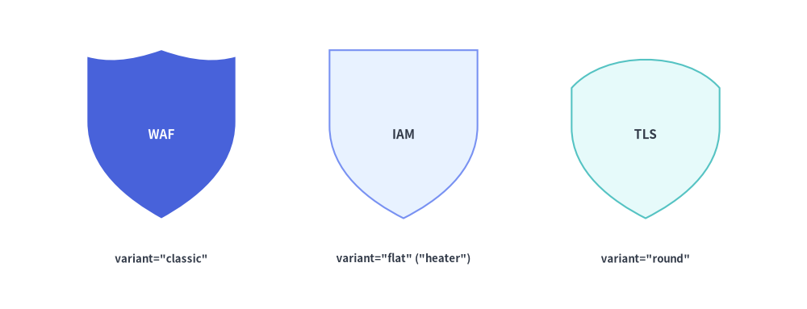
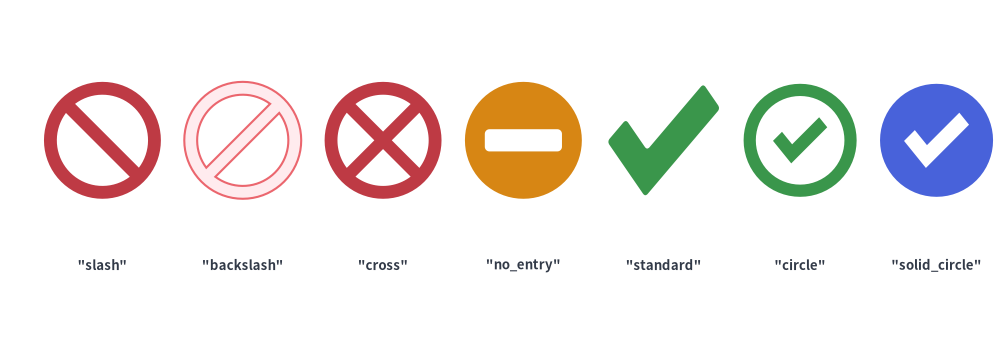

Callouts, Badges & Status
The Callouts, Badges & Status category of drawlib.shapes provides 8 annotation, security, and verification primitives: directional speech bubble callouts (bubblespeech), location/pointer pins (pin), release and classification tags (tag), 3D stepped milestone ribbons (ribbon), security/governance shields (shield), access-control prohibition badges (forbidden), verification checkmarks (checkmark), and comic/incident burst callouts (explosion).
Source Code
from drawlib.canvas import save, setup
from drawlib.shapes import (
bubblespeech,
checkmark,
explosion,
forbidden,
pin,
ribbon,
shield,
tag,
)
from drawlib.styles import Styles
from drawlib.text import text
setup(width=128, height=58)
lbl_dark = Styles.DarkBold.patch(text_size=10.0)
lbl_white = Styles.WhiteBold.patch(text_size=10.0)
cap_st = Styles.DarkBold.patch(text_size=9.5)
# Row 1: bubblespeech, pin, tag, ribbon
bubblespeech(
xy=(6, 39),
width=26,
height=13,
tail_edge="bottom",
tail_start_ratio=0.35,
tail_end_ratio=0.60,
tail_vertex_xy=(19, 34),
style=Styles.Neutral,
text="bubblespeech",
text_style=lbl_dark,
)
pin(
(49, 44),
width=14,
height=20,
variant="teardrop",
hole_ratio=0.35,
style=Styles.DangerFlat,
)
text((49, 31), "pin", style=cap_st)
tag(
(77, 44),
width=24,
height=14,
variant="angled",
style=Styles.PrimaryNeutral.patch(shape_r=1.5),
text="tag",
text_style=lbl_dark,
)
ribbon(
(111, 44),
width=28,
height=14,
variant="down",
style=Styles.PrimaryFlat,
text="ribbon",
text_style=lbl_white,
)
# Row 2: shield, forbidden, checkmark, explosion
shield(
(19, 16),
width=17,
height=20,
variant="classic",
style=Styles.PrimaryFlat,
text="shield",
text_style=Styles.WhiteBold.patch(text_size=9.5),
)
forbidden((49, 17), radius=8.5, variant="slash", style=Styles.DangerFlat)
text((49, 4.5), "forbidden", style=cap_st)
checkmark((77, 17), width=17, variant="circle", style=Styles.SuccessFlat)
text((77, 4.5), "checkmark", style=cap_st)
explosion(
(111, 16),
width=26,
height=20,
variant="irregular",
style=Styles.WarningFlat,
text="explosion",
text_style=Styles.DarkBold.patch(text_size=9.5),
)
save()
1. Quick Comparison of Callouts, Badges & Status Primitives
| Function | Default Anchor | Variants | Key Geometry Arguments | Primary Diagram Use Cases |
|---|---|---|---|---|
bubblespeech |
Bottom-Left (x0, y0) |
4 tail_edge sides ("left", "top", "right", "bottom") |
tail_start_ratio, tail_end_ratio, tail_vertex_xy |
Code annotations, architectural review notes, sequence/actor commentary. |
pin |
Center (cx, cy) |
"pointer" ("standard"), "teardrop" ("drop"), "pin" ("badge") |
hole_ratio (0.0–0.8), style.angle |
GeoMap location markers, timeline pointers, numbered inspection pins. |
tag |
Center (cx, cy) |
"angled" ("standard"), "chamfered" ("beveled"), "rounded" |
mirror=False, hole_ratio (0.0–0.7), style.shape_r |
Git release tags (v2.4.0), resource labels, key-value metadata badges. |
ribbon |
Center (cx, cy) |
"down" ("standard"), "up", "flat" ("banner") |
tail_width_ratio, drop_ratio |
Section headers, milestone banners, award titles, certificate headings. |
shield |
Center (cx, cy) |
"classic" ("standard"), "flat" ("heater"), "round" |
width, height |
WAF firewalls, IAM auth gates, TLS encryption, security trust boundaries. |
forbidden |
Center (cx, cy) |
"slash" ("standard"), "backslash", "cross", "no_entry" ("minus") |
radius, thickness_ratio (default 0.22) |
Blocked ports, firewall deny rules, deprecated paths, anti-patterns. |
checkmark |
Center (cx, cy) |
"standard" ("check"), "circle", "solid_circle" |
width, height, thickness_ratio (default 0.24), style.shape_r |
CI/CD pass gates, SLA compliance checks, verified security controls. |
explosion |
Center (cx, cy) |
"standard", "irregular", "heavy", "wild", "curved", "comic" |
width, height, style.shape_r |
Incident/outage bursts, fault injection points, anomaly callouts. |
2. Callout Speech Bubbles (bubblespeech)
bubblespeech draws a rectangular callout box with an integrated triangular pointer tail that originates from any of the four edges ("left", "top", "right", "bottom") and points to an exact target coordinate tail_vertex_xy:
bubblespeech(
xy: tuple[float, float],
width: float,
height: float,
tail_edge: Literal["left", "top", "right", "bottom"],
tail_start_ratio: float,
tail_vertex_xy: tuple[float, float],
tail_end_ratio: float,
*,
style: Style,
text: str = "",
text_style: Style | None = None,
) -> None
Parameter Reference
| Parameter | Type | Description |
|---|---|---|
xy |
tuple[float, float] |
Bottom-left corner (x0, y0) of the rectangular bubble body (always bottom-left anchored regardless of style.halign/valign). |
width / height |
float |
Width and height of the rectangular bubble body (> 0). |
tail_edge |
"left" | "top" | "right" | "bottom" |
Which edge of the bubble body the pointer tail attaches to. |
tail_start_ratio |
float |
Start attachment position along tail_edge in [0.0, 1.0] (measured from bottom-to-top for "left"/"right", or left-to-right for "top"/"bottom"). Must be < tail_end_ratio. |
tail_vertex_xy |
tuple[float, float] |
Absolute canvas coordinate (x, y) where the tip of the pointer tail points (must lie outside the bubble body). |
tail_end_ratio |
float |
End attachment position along tail_edge in [0.0, 1.0]. Must be > tail_start_ratio. |
style / text / text_style |
Style / str / Style | None |
Bubble fill/stroke style and centered annotation text. Note: bubblespeech ignores style.shape_r, style.angle, and style.halign/valign. |
from drawlib.canvas import save, setup
from drawlib.shapes import bubblespeech, circle, rectangle
from drawlib.styles import Styles
from drawlib.text import text
setup(width=124, height=54)
# Target nodes
circle((26, 12), radius=8.0, style=Styles.Neutral, text="Node A", text_style=Styles.DarkBold.patch(text_size=10.5))
rectangle((103, 21), width=26, height=16, style=Styles.Neutral, text="Service B", text_style=Styles.DarkBold.patch(text_size=10.5))
# 1. Callout with bottom tail pointing down to Node A
bubblespeech(
xy=(6, 33),
width=40,
height=15,
tail_edge="bottom",
tail_start_ratio=0.35,
tail_end_ratio=0.60,
tail_vertex_xy=(26, 25),
style=Styles.PrimaryFlat,
text="Bottom Tail Callout\n(tail_edge='bottom')",
text_style=Styles.WhiteBold.patch(text_size=10.5),
)
# Coordinate indicators for bottom-left anchor xy and tail_vertex_xy
circle((6, 33), radius=1.1, style=Styles.DangerFlat)
text((4, 29.0), "xy=(6, 33)", style=Styles.DangerBold.patch(text_size=10.0, halign="left"))
circle((26, 25), radius=1.1, style=Styles.DangerFlat)
text((28.5, 25.0), "tail_vertex_xy=(26, 25)", style=Styles.DangerBold.patch(text_size=10.0, halign="left"))
# 2. Callout with right tail pointing to Service B
bubblespeech(
xy=(65, 13),
width=16,
height=16,
tail_edge="right",
tail_start_ratio=0.30,
tail_end_ratio=0.70,
tail_vertex_xy=(88, 21),
style=Styles.SecondaryNeutral,
text="Note",
text_style=Styles.DarkBold.patch(text_size=11.0),
)
save()

3. Location Pins & Directional Markers (pin)
pin renders a map marker or directional pointer badge with an optional circular center cutout (hole_ratio) and optical text centering inside the upper circular head:
pin(
xy: tuple[float, float],
width: float,
height: float,
*,
variant: Literal[
"pointer", "standard",
"teardrop", "drop",
"pin", "badge",
] = "pointer",
hole_ratio: float | None = None,
style: Style,
text: str = "",
text_style: Style | None = None,
) -> None
| Parameter | Type | Default | Description |
|---|---|---|---|
xy |
tuple[float, float] |
Required | Center coordinate (x, y) of the pin bounding box (use style.patch(valign="bottom") to anchor the bottom tip at xy). |
width / height |
float |
Required | Outer horizontal width (> 0) and vertical height (> 0). |
variant |
PinVariant |
"pointer" |
Pin silhouette: • "pointer" (or "standard"): Circular head with straight tangent cone sides meeting at a sharp bottom tip.• "teardrop" (or "drop"): Smooth cubic-Bézier teardrop curve.• "pin" (or "badge"): Large circular badge head with a short pointer triangle at the base. |
hole_ratio |
float | None |
None |
Optional center hole radius ratio in (0.0, 0.8) relative to the head radius (e.g. hole_ratio=0.35 for a classic map pin ring). Omit hole_ratio when placing text inside the head. |
style.angle |
float |
0.0 |
Rotates the pin counterclockwise (e.g. angle=90 points right, angle=180 points up). |
text / text_style |
str / Style | None |
"" / None |
Label automatically centered inside the circular upper head rather than the overall bounding-box center. |
from drawlib.canvas import save, setup
from drawlib.shapes import pin
from drawlib.styles import Styles
from drawlib.text import text
setup(width=128, height=48)
lbl = Styles.DarkBold.patch(text_size=9.5)
# 1. Pointer with hole_ratio=0.35
pin((16, 27), width=15, height=22, variant="pointer", hole_ratio=0.35, style=Styles.DangerFlat)
text((16, 8.5), 'pointer (hole=0.35)', style=lbl)
# 2. Teardrop with embedded text (auto-centered in head)
pin(
(44, 27),
width=16,
height=22,
variant="teardrop",
style=Styles.PrimaryFlat,
text="A1",
text_style=Styles.WhiteBold.patch(text_size=10.5),
)
text((44, 8.5), 'teardrop (text="A1")', style=lbl)
# 3. Badge / Pin variant (large circular head + short pointer tip)
pin(
(73, 27),
width=17,
height=21,
variant="pin",
style=Styles.PrimaryNeutral,
text="99",
text_style=Styles.DarkBold.patch(text_size=10.5),
)
text((73, 8.5), 'variant="pin"', style=lbl)
# 4. Rotated pointer pin (angle=90 points right, text kept horizontal with angle=0)
pin(
(106, 27),
width=16,
height=23,
variant="pointer",
style=Styles.SecondaryNeutral.patch(angle=90),
text="GO",
text_style=Styles.DarkBold.patch(text_size=10.0, angle=0),
)
text((106, 8.5), "angle=90 (Right)", style=lbl)
save()

4. Release Tags & Ribbon Banners (tag, ribbon)
4.1. Release & Metadata Tags (tag)
tag renders a price/label/version tag with a pointed or beveled collar, an optional punch hole (hole_ratio), and optical text centering inside the rectangular body:
tag(
xy: tuple[float, float],
width: float,
height: float,
*,
variant: Literal[
"angled", "standard",
"chamfered", "beveled",
"rounded",
] = "angled",
mirror: bool = False,
hole_ratio: float | None = None,
style: Style,
text: str = "",
text_style: Style | None = None,
) -> None
| Parameter | Type | Default | Description |
|---|---|---|---|
xy |
tuple[float, float] |
Required | Center coordinate (x, y) of the tag bounding box. |
width / height |
float |
Required | Outer horizontal width (> 0) and vertical height (> 0). |
variant |
TagVariant |
"angled" |
Collar silhouette: • "angled" (or "standard"): 5-vertex tag with a triangular pointed tip on the right ($+X$).• "chamfered" (or "beveled"): 6-vertex tag with $45^\circ$ beveled corners and a flat tip edge.• "rounded": Smooth cubic-Bézier rounded collar on the right and rounded body corners on the left. |
mirror |
bool |
False |
If True, flips the tag horizontally so the collar/hole points left ($-X$). |
hole_ratio |
float | None |
None |
Optional circular punch hole radius ratio in (0.0, 0.7) placed inside the collar tip. |
style |
Style |
Required | Supports style.angle rotation and style.shape_r vertex rounding (on "angled" and "chamfered"). |
text / text_style |
str / Style | None |
"" / None |
Label automatically shifted slightly away from the pointed collar so it centers cleanly in the main rectangular body. |
4.2. Stepped 3D & Swallowtail Ribbon Banners (ribbon)
ribbon renders a celebratory or structural banner with swallowtail V-notched ends:
ribbon(
xy: tuple[float, float],
width: float,
height: float,
*,
variant: Literal[
"down", "standard",
"up",
"flat", "banner",
] = "down",
tail_width_ratio: float | None = None,
drop_ratio: float | None = None,
style: Style,
text: str = "",
text_style: Style | None = None,
) -> None
| Parameter | Type | Default | Description |
|---|---|---|---|
xy |
tuple[float, float] |
Required | Center coordinate (x, y) of the outer ribbon bounding box. |
width / height |
float |
Required | Total horizontal span (> 0) and vertical height (> 0). |
variant |
RibbonVariant |
"down" |
Ribbon structure: • "down" (or "standard"): 3D stepped ribbon where the central banner sits on top and the left/right swallowtail ends step downward behind darkened 3D fold triangles.• "up": 3D stepped ribbon where the central banner sits at the bottom and the swallowtail ends step upward.• "flat" (or "banner"): Single-piece 2D swallowtail banner without 3D steps. |
tail_width_ratio |
float | None |
None |
Horizontal fraction of width occupied by each side tail in [0.10, 0.35] (default 0.22). |
drop_ratio |
float | None |
None |
Vertical step offset fraction of height in [0.10, 0.45] on "down" and "up" variants (default 0.25). |
text / text_style |
str / Style | None |
"" / None |
Centered on the front central banner (automatically shifted upward on "down" and downward on "up"). |
from drawlib.canvas import save, setup
from drawlib.shapes import ribbon, tag
from drawlib.styles import Styles
from drawlib.text import text
setup(width=128, height=74)
lbl = Styles.DarkBold.patch(text_size=9.5)
# Row 1: Tag variants (angled, chamfered, rounded, mirrored + hole_ratio)
tag(
(18, 57),
width=26,
height=14,
variant="angled",
hole_ratio=0.32,
style=Styles.PrimaryFlat.patch(shape_r=1.2),
text="v2.4",
text_style=Styles.WhiteBold.patch(text_size=10.0),
)
text((18, 43), 'angled (hole=0.32)', style=lbl)
tag(
(49, 57),
width=26,
height=14,
variant="chamfered",
hole_ratio=0.32,
style=Styles.PrimaryNeutral,
text="PROD",
text_style=Styles.DarkBold.patch(text_size=10.0),
)
text((49, 43), 'variant="chamfered"', style=lbl)
tag(
(80, 57),
width=26,
height=14,
variant="rounded",
hole_ratio=0.32,
style=Styles.SecondaryNeutral,
text="BETA",
text_style=Styles.DarkBold.patch(text_size=10.0),
)
text((80, 43), 'variant="rounded"', style=lbl)
tag(
(111, 57),
width=26,
height=14,
variant="angled",
mirror=True,
hole_ratio=0.32,
style=Styles.Neutral.patch(shape_r=1.2),
text="LEFT",
text_style=Styles.DarkBold.patch(text_size=10.0),
)
text((111, 43), "mirror=True", style=lbl)
# Row 2: Ribbon variants ("down", "up", "flat")
ribbon(
(24, 22),
width=36,
height=16,
variant="down",
style=Styles.PrimaryFlat,
text="PHASE 1",
text_style=Styles.WhiteBold.patch(text_size=10.0),
)
text((24, 7.5), 'variant="down" (3D Step Down)', style=lbl)
ribbon(
(66, 22),
width=36,
height=16,
variant="up",
style=Styles.PrimaryNeutral,
text="PHASE 2",
text_style=Styles.DarkBold.patch(text_size=10.0),
)
text((66, 7.5), 'variant="up" (3D Step Up)', style=lbl)
ribbon(
(106, 22),
width=34,
height=14,
variant="flat",
style=Styles.SecondaryNeutral,
text="BANNER",
text_style=Styles.DarkBold.patch(text_size=10.0),
)
text((106, 7.5), 'variant="flat" (2D Banner)', style=lbl)
save()

5. Security & Governance Shields (shield)
For Web Application Firewalls (WAF), IAM policy gates, zero-trust boundaries, and encryption badges, shield provides three classic heraldic silhouettes:
shield(
xy: tuple[float, float],
width: float,
height: float,
*,
variant: Literal[
"classic", "standard",
"flat", "heater",
"round",
] = "classic",
style: Style,
text: str = "",
text_style: Style | None = None,
) -> None
| Parameter | Type | Default | Description |
|---|---|---|---|
xy |
tuple[float, float] |
Required | Center coordinate (x, y) of the shield bounding box. |
width / height |
float |
Required | Outer horizontal width (> 0) and vertical height (> 0). |
variant |
ShieldVariant |
"classic" |
Shield crest silhouette: • "classic" (or "standard"): 3-segment scalloped top crest with a central peak and curved sides tapering to a bottom point.• "flat" (or "heater"): Straight horizontal top edge with smooth cubic-Bézier sides meeting at a pointed base.• "round": Arched convex top with a wide, rounded U-shaped base. |
style |
Style |
Required | Fill, border, and rotation (angle) style. |
text / text_style |
str / Style | None |
"" / None |
Label optically shifted slightly upward (+0.04 * height) into the broader upper body of the shield. |
from drawlib.canvas import save, setup
from drawlib.shapes import shield
from drawlib.styles import Styles
from drawlib.text import text
setup(width=120, height=46)
lbl = Styles.DarkBold.patch(text_size=9.5)
# 1. Classic scalloped crest shield
shield(
(24, 26),
width=22,
height=25,
variant="classic",
style=Styles.PrimaryFlat,
text="WAF",
text_style=Styles.WhiteBold.patch(text_size=11.0),
)
text((24, 7.5), 'variant="classic"', style=lbl)
# 2. Flat-top heater shield
shield(
(60, 26),
width=22,
height=25,
variant="flat",
style=Styles.PrimaryNeutral,
text="IAM",
text_style=Styles.DarkBold.patch(text_size=11.0),
)
text((60, 7.5), 'variant="flat" ("heater")', style=lbl)
# 3. Round-bottom shield
shield(
(96, 26),
width=22,
height=25,
variant="round",
style=Styles.SecondaryNeutral,
text="TLS",
text_style=Styles.DarkBold.patch(text_size=11.0),
)
text((96, 7.5), 'variant="round"', style=lbl)
save()

6. Access Control & Verification Badges (forbidden, checkmark)
For firewall rules, access control matrices, CI/CD verification gates, and audit checklists, forbidden and checkmark render crisp compound-path vector status symbols:
forbidden(
xy: tuple[float, float],
radius: float,
*,
variant: Literal[
"slash", "standard",
"backslash",
"cross",
"no_entry", "minus",
] = "slash",
thickness_ratio: float | None = None,
style: Style,
text: str = "",
text_style: Style | None = None,
) -> None
checkmark(
xy: tuple[float, float],
width: float,
height: float | None = None,
*,
variant: Literal[
"standard", "check",
"circle",
"solid_circle",
] = "standard",
thickness_ratio: float | None = None,
style: Style,
text: str = "",
text_style: Style | None = None,
) -> None
| Function | Parameter | Type | Default | Description |
|---|---|---|---|---|
forbidden |
xy / radius |
tuple / float |
Required | Center coordinate (cx, cy) and outer circle radius (> 0). |
variant |
ForbiddenVariant |
"slash" |
• "slash" ("standard"): Annular ring with top-left to bottom-right diagonal bar (two D-shaped cutouts).• "backslash": Annular ring with bottom-left to top-right diagonal bar.• "cross": Annular ring with an 'X' cross (four sector cutouts).• "no_entry" ("minus"): Solid circle with a horizontal rectangular cutout bar. |
|
thickness_ratio |
float | None |
None |
Ring and bar thickness ratio in (0.0, 0.5) relative to radius (default 0.22). |
|
checkmark |
xy / width |
tuple / float |
Required | Center coordinate (x, y) and horizontal width (> 0). height defaults to width when None. |
variant |
CheckmarkVariant |
"standard" |
• "standard" ("check"): Standalone 6-vertex L-shaped tick polygon (supports style.shape_r).• "circle": Outer circular ring combined with an inner checkmark polygon.• "solid_circle": Solid circular badge with a transparent checkmark cutout. |
|
thickness_ratio |
float | None |
None |
Stroke thickness ratio in (0.0, 0.5) relative to min(width, height) (default 0.24). |
from drawlib.canvas import save, setup
from drawlib.shapes import checkmark, forbidden
from drawlib.styles import Styles
from drawlib.text import text
setup(width=128, height=44)
lbl = Styles.DarkBold.patch(text_size=9.5)
# Forbidden variants
for i, (var, st) in enumerate([
("slash", Styles.DangerFlat),
("backslash", Styles.DangerNeutral),
("cross", Styles.DangerFlat),
("no_entry", Styles.WarningFlat),
]):
cx = 13 + i * 18
forbidden((cx, 26), radius=7.5, variant=var, style=st)
text((cx, 10), f'"{var}"', style=lbl)
# Checkmark variants
for i, (var, st) in enumerate([
("standard", Styles.SuccessFlat.patch(shape_r=0.5)),
("circle", Styles.SuccessFlat),
("solid_circle", Styles.PrimaryFlat),
]):
cx = 85 + i * 17.5
checkmark((cx, 26), width=14.5, variant=var, style=st)
text((cx, 10), f'"{var}"', style=lbl)
save()

7. Impact & Incident Bursts (explosion)
For chaos engineering fault points, outage callouts, anomaly alerts, and high-impact promotional badges, explosion provides six starburst silhouettes fitted to (width, height):
explosion(
xy: tuple[float, float],
width: float,
height: float,
*,
variant: Literal[
"standard",
"irregular",
"heavy",
"wild",
"curved", "comic",
] = "standard",
style: Style,
text: str = "",
text_style: Style | None = None,
) -> None
variant |
Spike Count & Geometry | Supports style.shape_r |
Typical Use Cases |
|---|---|---|---|
"standard" (default) |
12-spike burst with deterministic alternating major/minor spike depths | Yes (float or 24-tuple) |
Standard alert bursts, "NEW!" badges, and impact callouts. |
"irregular" |
11-spike asymmetric burst with organic angular spacing | Yes (float or 22-tuple) |
Crash/collision indicators, chaos fault injection markers. |
"heavy" |
8-spike broad, heavy-Impact burst | Yes (float or 16-tuple) |
Compact outage badges with ample interior room for text labels. |
"wild" |
16-spike dense, high-energy burst with deep valleys | Yes (float or 32-tuple) |
High-severity incident callouts, DDoS/traffic spike indicators. |
"curved" / "comic" |
10-spike burst with inward-curved quadratic Bézier valleys | — (Curved Bézier arcs) | Comic-style blast callouts and expressive presentation highlights. |
from drawlib.canvas import save, setup
from drawlib.shapes import explosion
from drawlib.styles import Styles
from drawlib.text import text
setup(width=130, height=46)
lbl = Styles.DarkBold.patch(text_size=9.5)
txt_w = Styles.WhiteBold.patch(text_size=9.5)
txt_d = Styles.DarkBold.patch(text_size=9.5)
specs = [
("standard", 15, Styles.DangerFlat, "ALERT", txt_w),
("irregular", 40, Styles.WarningFlat, "BOOM!", txt_d),
("heavy", 65, Styles.PrimaryFlat, "FAULT", txt_w),
("wild", 90, Styles.DangerNeutral, "SPIKE", txt_d),
("curved", 115, Styles.SecondaryNeutral, "POW!", txt_d),
]
for var, cx, st, inner, tst in specs:
explosion((cx, 26), width=23, height=21, variant=var, style=st, text=inner, text_style=tst)
text((cx, 8), f'"{var}"', style=lbl)
save()